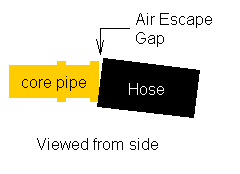

Go Home
Site Map
Go Home
Site Map
Water Water everywhere but not a drop to drink
Ok, we have a hundred articles about this in the forums. Why yet another one?
The basic procedure is all over the place but there's a thing or three not in the various books or most of the forum replies. I only recently thought of this because I had to change the heater core this past summer. This modified procedure should help reduce some of the headache of filling a dry system and prevent lack of heat from a new heater core. I've also included some other cooling system information many people don't know.
WARNING!¡! NEVER OPEN A HOT COOLING SYSTEM! Scalding hot water can and often will shoot several feet if you do this.
WARNING!¡! Ethylene Glycol antifreeze is POISON! DO NOT ingest or inhale it. Ethylene Glycol can cause kidney damage and death. If the cooling system has a leak that is producing a cloud of mist or steam leave the area until it dissipates.
NEVER dump coolant into septic systems or cesspools! The coolant can contaminate the entire system to the point it will have to be replaced.
Do not use 50/50 Premix Coolant of any brand after a flush. See the Premix section for details.
How Toxic is Ethylene Glycol coolant?
- The Babcox article linked at the end of this page says 1 gallon of coolant can render 10,000 gallons of water unfit to drink.
- Accordng to The Sierra Antifreeze FAQ "Two ounces of ethylene glycol antifreeze can kill a dog, one teaspoon can be lethal to a cat, and two tablespoons can be hazardous to children." (Before someone screams bias... The people who make Sierra also make Peak Ethylene Glycol based antifreeze. Read the links at the end of this page.)
- Propylene Glycol is less toxic than Ethylene Glycol but it still bad for you in large doses.
- Propylene Glycol is actually used in many food products.
What coolant do I use?
Brand doesn't matter much. Whether you use traditional Ethylene Glycol (EG) based coolant or less toxic Propylene Glycol (PG) is entirely up to you. All of the name branded EG coolant presently on the market meets or exceeds the Fiero's original requirements.
PG antifreeze does give up a small amount of freeze/boil protection but meets all requirements for corrosion protection and lubrication. The difference in freeze/boil protection would only matter for some cars. Most people will be unaffected by it.
The main thing is how it's installed. Most brands of antifreeze recommend premixing with an equal volume of water, a 50/50 mix. You can go as high as 70/30 in really cold climates. You don't want it thinner than 50/50 or the additives in the coolant will be too weak to do their job. Thicker than 70/30 and it won't cool properly. (Too much antifreeze can make the car overheat.) Read the package instructions to determine just what mix you want to use.
Don't mix coolant types! Mixing the types won't do any damage but it makes service a pain in the ass. Mixing Ethylene and Propylene based coolant will leave you with a system you that you can't easily test later. The 2 coolants need different testing tools. The long life stuff will be degraded by regular coolant. Check the specific coolant maker for details.
New long life coolants
Prestone® "All Makes All Models Extended Life Antifreeze/Coolant" claims to eliminate guesswork with their new coolant product. Others are sure to follow.
Do these products work? Yes. Use them and be just fine. I would guess they are still Ethylene Glycol based products so don't plan on using them in Propylene Glycol (Sierra) loaded systems.
DEX-COOL®
Update: DEX-COOL has a Lawsuit. Read this article at IMCOOL.COM.
Note! For those of you who have vehicles with DEX-COOL in them, read this article at IMCOOL.COM.
Water
The source of water you use does matter. It effects the life of the coolant and the system as a whole. Use the cleanest water you can.
Never use "softened" water. Softener units add salt to the water that can cause damage to the cooling system.
Tap water commonly has a high mineral content, Chlorine, and other chemicals that are bad for the system. Consider buying deionized bottled water to mix with coolant. Deionized water is just below Distilled water on the clean scale. You can get it in allot of grocery stores. Deionized and Distilled water are usually in the beverage or laundry isle. (It's often sold for people to use in their irons.) This water won't cause hard water scale or react with chemicals in the coolant.
If you have a home "Reverse Osmosis" water filter, you can use it to fill the system. Keep in mind an RO system takes several hours to fill its tank. Store up 2-3 gallons ahead of time. That way it's ready to go.
There is some disagreement between coolant makers. Some say tap water is ok while other's say use Deionized or distilled water. I'd say if you aren't sure of the water comming from your tap, use the deionized or distilled. Deionized water isn't very expensive and clean water is always going to be better for the system.
Premixing Coolant? What the hell is that?
If you have just flushed the system then DO NOT use premix coolant. Read the update in this section....
It's not a difficult thing. It's a hell of allot easier to do this now than try to adjust the coolant once its in the car. You're going to need around 3.5 gallons to fill a dry system plus it gives you some properly mixed stuff to fill the coolant recovery tank with later. (Note: Several coolant makers have their product available straight or premixed. You should not alter premixed products.)
All you need is something so you can measure with and a 5 gallon container.
The coolant makers recommend a 50% mix for most cars. A 50% mix of most brands of coolant will prevent freezing to -34(-37C) and has a boiling point of 265F(129C) with 15psi cap. You can add more coolant, up to 60-70% to get more antifreeze protection.
NOTE: The maximum amount of coolant allowed varies by maker. Read the package or see the maker web site for details. Adding coolant beyond the maker's specs won't help anything and can hurt cooling system performance.
| Quick mix table for 5 gallons of ready to use coolant | ||
|---|---|---|
| Antifreeze, gallons | Water, gallons | % coolant |
| 2.5 | 2.5 | 50 |
| 2.75 | 2.25 | 55 |
| 3 | 2 | 60 |
| 3.25 | 1.75 | 65 |
| 3.5 | 1.5 | 70 |
The same table works for metric. Just change the word gallons to liters and multiply everything to get the quantity you want. This is one of the few times no odd fractions are involved. Even US readers can use liters when mixing small volumes to top off the system or fill the recovery bottle.
Important Update...
Do not use 50/50 Premix Coolant after a flush.
This document was originally written as if you would be filling a dry system. (Like you just changed an engine or something...) If you are filling a system that has been flushed, you now have plain water trapped in the engine and heater core. If you add premixed coolant to the system the trapped water will dilute and weaken the antifreeze.
The whole point of flushing was to eliminate weak coolant and dirt. We certainly do not want to install new coolant only to dilute it below spec. That would leave the coolant too weak to properly protect the system, defeating the large amount of work you just did.
To account for the trapped water:
- Drain the under car pipes and radiator after flushing.
- Use 2 Gallon of strait coolant. (Approximately 7 quarts of new antifreeze for all Fiero models but 2 gal will work and leave the overflow bottle alone.)
- Fill the rest with water. (De-ionized water is preferred.)
Overflow Bottle is empty? Use 50/50 mix to fill it. Bottle is full of water? Empty and fill with 50/50 mix.
This will eliminate the problem of trying to figure out how much water was trapped in the system after flushing. The rest of the filling procedures do not change!
How do I drain the system?
You'll need a catch pan and a 5 gallon pail. One of those pumps you can run with a power drill is really nice. With that you can pump the coolant to the pail and not spill it all over. Even with a pump, you'll need the pan to drain the under car pipes. (The drill pump works really great if you have to use old jugs to collect the waste coolant. Beats the hell out of a funnel.)
Remove the filling cap on the engine. Leave the cap on the Radiator. If you take both off at the same time, you'll dump around a gallon of coolant all over the place. (The check valve on the radiator cap will open when the radiator starts draining. It should also siphon out most of the recovery tank this way.)
There is a petcock in the radiator that you open to drain most of the system. Once coolant has stopped draining from the radiator remove the plug from the rear of each coolant pipe under the car. The plugs are just behind the doors.
There are drain plugs in most engines but they are giant pains to get out. Even with the plugs out you often can't drain it dry. Flush the old coolant out until the water drains clear.
Don't forget to empty and clean the recovery tank! That thing gets amazingly filthy.
How do I fill my cooling system?
Car parked on level ground or nose up or down if ground isn't level. (Just don't park with either side higher that other side.)
Any method needing a jack etc likely has major problems, like crush pipe.
The Thermostat is easier to install when you lubricate the O-ring with Silicone grease. (Brake grease will work.)
Short Version
This should do the job in most cases...
Notes:
You don't need all of air out but only to make sure lower Tstant is covered with coolant so the Tstant and sensors/senders read coolant temp.
Bad cap or bad areas on the housing can cause even new caps to fail to seal But Good parts can fake problems because can take 1 to several heat cycles to purge air out of system.
| Step | Action |
|---|---|
| 1 | Remove both caps and Thermostat. |
| 2 | Fill radiator to full and Cap radiator |
| 3 | Continue to fill at thermostat housing. |
| 4 | Install Thermostat and cap. |
| 5 | Start and run engine for 30 seconds. |
| 6 | Remove the Thermostats and check coolant level. |
| 7 | Top off if needed. |
| 8 | Repeat steps 4 thru 7 until system is full. |
| Finishing | |
| 9 | Replace Thermostat and cap. |
| 10 | Fill Coolant Reserve Tank and cap the tank. |
Long Version...
Removed. Cause more confusion then help.
"Burping"
You don't need to manually remove all of the air out of the system. Make sure lower Tstant is covered with coolant so the Tstant and sensors/senders can read coolant temperature. The system will do the rest of the work to remove air.
- Radiator will burp air when reserve tank is full and hose to tank is sealed.
- The Heater Core will burp air when the thermostat is installed before you run the engine.
Myth of "burping" Fiero coolant system
Many methods of "burping" Fiero coolant system and most are compete waist of time at best.
Thinking Engine's Thermostat cover is the high point to fill the system is correct.
BUT
Many think that trap air from filling will stay wherever. That is False.
The engine running means the Water Pump is active and Coolant Flow vs. Size any passages/pipe comes into play. Engine, Heater loop, and pipes under the car can't hold onto most air because the passages and pipes/hoses are too small. They compare to River rapids. The Coolant's Flow and Viscosity will force most air bubbles to move in whatever the flow's direction.
Air bubbles will move to the Radiator even when the engine head(s), etc, are higher then the radiator because that has enough tubes (total volume/area) to slow down coolant flow, like wide and deep River, and let air to stagnant and stay there. The Radiator Cap will purge that air thru the overflow tank when system gets hot in the next heat cycles.
Air bleeding the heater core
Use the fill method above first. It's an option for heater core replacement or a "dry" system if you have problems.
After you check heater plumbing for pinch hoses etc. Air bleeding the heater core may help if you have problem get all the air out of it.
This part is allot easier with 2 people. If you're by yourself fill the back then vent the heater. If you are starting from dry then you may need to go back and forth a couple times.
- Carefully move the top hose clamp out of your way and loosen the hose. Don't pull on the hose. If it is stuck make a hook from some thin rod or bar stock and work it under the hose to loosen it. Pulling or twisting on the hose can crack the solder joints at the heater core tank.
- Once the hose is loose work it slowly off the core tubing to let the air out of the system. If need be add coolant to the back until the heater fills. Try to hold the hose as shown below. You want to keep the opening as small as you can to eliminate as much air as possible without spilling coolant all over the place.
- When the air is gone put the hose back and clamp it in place.
This will eliminate the vast majority of air from the heater core and its plumbing. It should make heater core replacement and filling the system from dry allot less of a headache.

Coolant Storage
First off keep it in a plastic container. When most antifreeze is left standing it will settle to the bottom of the container. This will leave plain water at the top that can start corrosion in metal containers.
Second make sure you stir it up before you use it. If the container wasn't sealed well check it with a tester to make sure it's still the mix you want.
Third many antifreeze products have a shelf life. The additives in them can spoil over time even if the coolant has never been mixed or used. For example Texaco claims DEX-COOL (AKA Havoline Extended Life Anti-freeze) has a shelf life of over 8 years compared to their regular products which have a shelf life of around 18 months.
These separation and spoilage issues are part of why a car left stored for a long time often looses the water pump shortly after they are taken out of storage. It's not the only factor but it's a big one. The problem can also contribute to failure of the radiator and heater core.
Why does antifreeze go bad?
Actually Ethylene Glycol and Propylene Glycol don't go bad. It's the additives that lubricate the water pump and prevent corrosion that wear out or spoil not the coolant base.
Lube the pump?
More correctly the pump seal. The bearings are sealed and not exposed to coolant. There are additives in most coolant products that preserve/lubricate the seal and they go stale just like the anti rust additives.
Why recycle?
Ethylene Glycol is extremely toxic. It can cause irreversible kidney damage or death. In addition used coolant can contain lead and other toxic compounds. These need to be kept out of the environment as much as possible. Coolant must never be dumped on the ground where animals or children may ingest it.
Used coolant can be used to make new coolant at relatively low expense. Basically the used coolant passes through a machine where the EG is filtered and separated from the water and other contaminates. A new additive package is added to the recovered EG and it is ready for use.
Many areas now ban dumping used coolant into the sewer system.
NEVER dump coolant into septic systems or cesspools! The coolant can contaminate the entire system to the point it will have to be replaced.
Where can I take it?
In many cases you can return waste coolant to the large chain service centers like Pep Boys and K/Wal-mart. Some small shops with their own recovery machine may also take it. Exactly who will, or is required to, accept used coolant varies by city/state. Contact your city/state waste authority or state EPA. Most of these agencies are now on the web. In the U.S. you can often get to them at www.state.XX.us just put your state's postal code in place of XX.
Is recycled coolant safe?
Note: Only Ethylene Glycol is currently sold as recycled antifreeze.
It is perfectly safe for the car as long as it is processed correctly. The key words are "processed correctly."
If you are buying the recycled coolant as retail packaged product it should not be any less reliable than new coolant. Retail products should all meet current new car guidelines for antifreeze. Read the package for specific details.
The ones to watch out for are repair shops and salvage yards. There is little or no oversight of this market segment and there have been problems with them. The main issue is that the recycled coolant may not meet requirements for additive replacement. These additive packages provide the lubricant for the water pump and corrosion inhibiters. Without the correct amount of additives, the coolant will be free to eat the system.
If you were buying the coolant from a small packager, like a salvage yard, it wouldn't hurt to ask questions like what additive product was used in it. If they won't answer your question or you aren't comfortable with the answer then you might want to shop elsewhere. If they tell you no additive was mixed in then you would have to buy that and add it yourself. At this point the recycled coolant can get to be more trouble than it's worth.
If you are having cooling system work done ask what coolant is being put in the car. If they tell you they are recycling your coolant then ask what brand additive package they are using. Treat this like a small packager above.
No, I'm not saying all coolant recycling in small shops is bad. I'm simply saying you need to be aware of who is doing it. The Quality of on site coolant recycling is only as good as the people doing the job and the condition of their equipment.
Here are some articles on coolant and coolant recycling.
From the USEPA:
Others:
Sierra Antifreeze is one of the better known Propylene Glycol "Low Tox" antifreeze products. Manufactured by Old World Industries, Inc. Their coverage of toxicity issues is spread thru the Sierra and Peak antifreeze sites. You have to dig a bit to find it all.